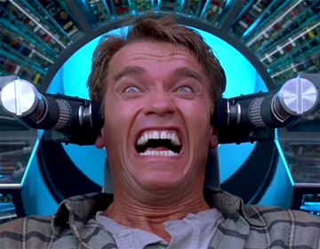
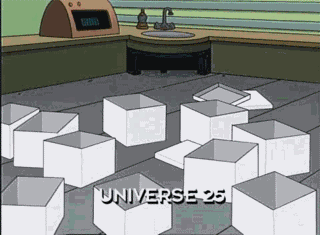
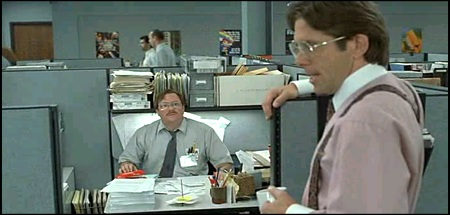

So who else feels like Arnold in Total Recall when trying to work out CSS?
Now I don't know if you saw the film. That isn't relevant, but it is a science fiction classic and don't watch the 2000 remake. What is relevant is how you feel like your brain is getting scrambled while trying to make your website look presentable. I'm not going to offer a solution, but I'll try to write out some concepts that make sense to me, but may not make any sense to you.
Did you know that web design generally consists of utilizing lots of boxes in order to look aesthetically pleasing to the eye?
If you look at a picture, it's likely to be in a box. If you look at a paragraph, it's also sitting in a box. As a user, it is easy to take this concept for granted because users mays assume it is as easy as cobbling together a powerpoint presentation. However, it is far more difficult to build than what you may use to.
HTML is like making a skeleton (the tags) and throwing a few organs (the substance/information) in there. However, it doesn't look pretty and people like looking at projects with a little more "meat." CSS is the muscle and skin that makes the website feel alive. In order to accomplish this, CSS treats the HTML as a series of boxes that surround different elements. Starting from there, let's focus on the box model.
Every box has a border in css even if you don't see it. Imagine if you were a mime pretending you were stuck in a box all day. Afraid of mimes? How about if you imagine yourself in a workplace in a stereotypical cube shaped cubicle?
So the box model is a concept regarding boxes in CSS using terms such as margins, padding, and borders. There are hundreds of sites that explain it via a picture, model, or sample. I figure I would take a diffferent approach and attempt to explain it via my homemade example from Office Space (an all-time favorite film).
Let's pretend we have Milton (a memorable character form the film) is stuck in this confining cubicle that is surrounded by walls. These walls would make up the border.
Is Milton stuck in this cubicle? Is his entire body rigidly stuck within the confines of his borders? Nah, there is definitely some wiggle room! In CSS terms, this would be padding." Padding is the space between the content of the box and the border. Thankfully, Milton can move around his cubicle!
In this blog, you can see the padding space between the text and the border.Now, let us imagine Milton leaving the comfortable padding of his cubicle to beg for office birthday cake. Outside the borders, Milton is now in the margin .The margin is all the space outside the box. On a website, it is completely transparent. Notice on this website, I don't have boxes taking up the entire width of the page? The margin is all space outside these boxes that I have created.
I don't need to get into CSS manipulation because you could get it out of any book or web site. It is more important to conceptually imagine and experiment with the walls. For example, Milton wants more space for his "red stapler." We can re-adjust via {padding} in order to center Milton more. Maybe he wants to be closer to one wall of the cubicle? How about we can increase the padding by focusing on the left? How about increasing the ceiling height? We could increase the padding top value!
Margins are trickier. Just imagine if Milton wanted to separate his cubicle from other cubicles and wanted some solidarity. You could increase the margin on various sides to separate him from other workers (box elements)!
So to summarize, Milton is the element on a web page. CSS treats each element as a box surrounded by a border with padding inside. Outside of this box, the margin exists as usable space. Hope you appreciate the Office Space example and feel free to comment!